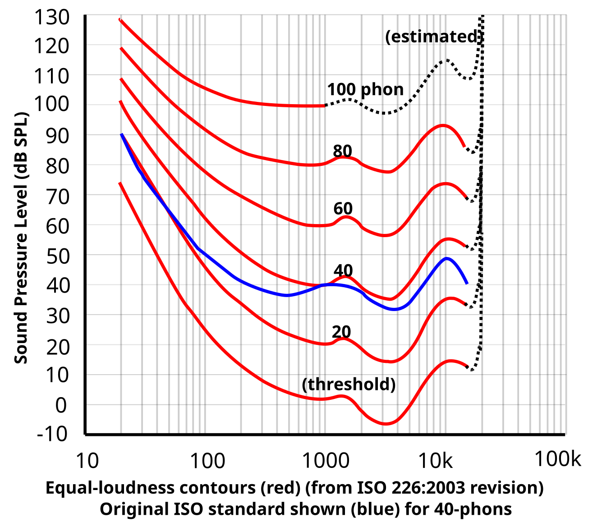
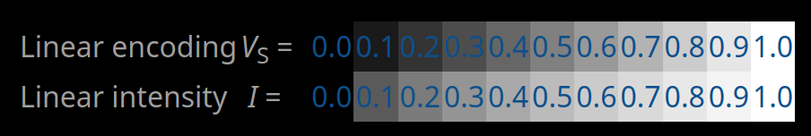

Arrays to air
Arrays to air
Big ball of wibbly-wobbly, timey-wimey... air
- How computers play sounds
- How humans hear sound
- DON'T USE HEADPHONES

DON'T USE HEADPHONES
DON'T USE HEADPHONES
SERIOUSLY, DON'T USE HEADPHONES
Some demos can have very loud, annoying or even painful audio. Don't use headphones. Using headphones may be detrimental to your hearing health. The usage of the <blink> tag in this presentation may be one of the very few acceptable usages of this tag in the history of HTML.
This is a tone
Cheatsheet
- Some things are intuitive: amplitude ~ volume, frequency ~ pitch
- Why is frequency going up from ~50 to 10K Hz? (Hz = Cycles per second)
- Why is amplitude going up to .25?
- Play with the amplitude and frequency sliders. Do they feel natural, or do they feel like the resolution at each end is wrong?
- Does frequency affect how loud things sound? Check a tone at 200 Hz, and then at 5 KHz. If you keep the amplitude the same, do they sound equally loud?
- When you move the amplitude bar around, does it sound glitchy?
Color
Cheatsheet
- Sound is the way we perceive tiny periodic variations in air pressure level
- You can make a parallel to light; although there are many differences between how we perceive light and sound, to understand either we need to study how they behave, propagate, how to operate on them and how humans perceive it.
- Don't read too much into the mapping itself, it's a 20 minute hack and not a good reflection of perceptual similarities between human vision and hearing.
Human speech and hearing range
Cheatsheet
- Human hearing is limited
- Speech and music are a subset of what we hear
- Audio equipment is limited in range too (what's the point of a speaker capable of producing sounds we can't hear?)
- Why is frequency going up from ~50 to 10K Hz? Most equipment can deal with this range. Above 10K and below 50 Hz things can get unreliable.
- The point above applies to both, humans and electronic beings: computers trying to play a tone above 10K tend to do a poor job at it, but humans also lose the top end of the hearing range as they age. You shouldn't rely on humans hearing things above 10K, even in populations without hearing impairments. Fell free to use sound above 20KHz if your target audience is bats or dolphins.
- Why is amplitude going up to .25? Things sound loud with ".25" already, but also our hearing is not linear.


Which slider feels more natural?
Human hearing is logarithmic
Cheatsheet
- Human hearing is logarithmic, not linear: in the log-sweep, increments in pitch are perceptually even. In the lin-sweep, we perceive the pitch to increase rapidly at first, and then very slowly at the end (logarithmically!).
- We can't change how humans hear, but we can change the scale: log scales make work easier / more natural.
- This works for both frequency and amplitude.
- This works for music too, where doubling the frequency represents one octave. Your piano keys are linearly placed, but they play sound using a log scale.
Hear these two samples: which one sounds "natural"?
Loudness is a psychoacoustic effect
Cheatsheet
- Our hearing is logarithmic: this lets us enjoy loud Metal and also lets mosquitoes keep us awake at night.
- Human hearing is extremely badly designed: besides being logarithmic (complicated), it is also very non linear. Different frequencies will have different apparent loudness, even if their "volume" is the same.
- To make loudness more intuitive, we use a log scale (dB)
- A computer can't know the volume of your speakers, so we rarely talk about actual sound-pressure-level (although you can, if you have calibrated equipment). Instead, we talk in dBFS (Decibel Full Scale). dBFS are a log-scale to the loudest possible sound your system can render (y=1; 0 dBFS).
- 20*log10(1) = 0; 20*log10(.5) ≈ -6; 20*log10(.25) ≈ -12;
- Speech ~= -24 to -16 dBFS
- Noise floor ~= -48 dBFS
- To pretend the author of this note is scientifically rigorous: the difference between the loudest and quietest sounds humans perceive is about 120dB.
- There are curves to approximate human-perceptual equal-loudness. You may hear about these as [a,b,c,d]-curves

Humans are generally non linear
Cheatsheet
- Non linearities also apply to human vision. Video people call it gamma correction to sound fancy.
- Color receptors have a non linear response, so trying to render luminance in a linear way has the same problems in both aural and visual effects.
- The gamma scale above may or may not look fine depending on the monitor. See here for details.


Let's make it twice as complicated
Cheatsheet
- Phase is the third parameter we control over a tone [s = A*sin(f*t+φ)].
- Phase is calculated in relation to an assumed 0 offset
- On its own, changing the phase does nothing (for humans or for computers).
- When our system has more than a single pure tone, phase effect between different tones becomes important (hint: normal people don't spend a lot of time hearing pure tones. This means phase becomes important in everything but the simplest test setups.)
- Phase effects become important in real acoustic environments, where (for example) speaker placement will cause constructive and destructive interference zones with "valleys" and "peaks", where certain frequencies get a boost up or down.
- Honorable mention: Phase is an important part of direction-of-arrival estimation (which we can do thanks to having two ears).
Interference with different frequencies
Cheatsheet
- Playing with two tones creates many interesting effects. Things get a lot more fun, but also our tools to understand the system become inadequate: a simple time-domain plot of the sine wave doesn't make it easy to visualize what we are hearing. We'll address that soon.
- If the tones are far apart, you can hear them as two distinct entities (think how weird this is: you only have one source, but you can hear two things. The human brain separates input audio into objects/sources!)
- With a big enough difference, one tone shows as a pulsing effect over the other (but you will hear them as two different tones, of course).
- With a small difference, you hear a low frequency beat together with the tone: there are either one or two tones, plus a beat that's periodic (at |f1-f2|: we can use two high frequency tones to emulate a low frequency beat!).
- Fun trivia: the beat effect is how you can tune a piano without electronic equipment: when the beat is gone, the frequencies match.
- Fun trivia II: the beat effect is how you can hook up a generator to the grid without electronic equipment. If you hook up an incandescent light between your generator and the power grid, you will see a pusling effect until the frequencies match. Once the frequencies match, there will be no pulsing (if you see any light there is still a phase diferential that needs to be addressed. If you don't, expect a very loud and expensive boom). Don't do this at home, messing with the power grid is dangerous.
- The thing above is called a synchroscope. The name alone makes this super cool.
Understanding complex sounds
Cheatsheet
- A time-domain plot of our signal is of limited value once things get complicated. More than a single thing is complicated.
- A frequency analysis of the signal is a good way to intuitively understand some effects.
- You can see, for example, the low frequency beat that you get from playing two tones offset a small amount.
- You can also see how playing two tones at the same frequency just adds up energy, and how you lose separation between tones, visually, once they get close together.
- Because of how FFTs work (spectral leakage), the graph doesn't show an exact peak where you may expect; depending on analysis params, and depending on input frequency, the energy of the signal can be spread between different frequency bands. This is very easy to see with low frequency tones, as the scale is log. If the signal under analysis were perfectly aligned with our FFT bin boundaries, we'd see just a line.
- An FFT works by windowing the signal (analyzing the signal in chunks/frames). A longer window gives us better resolution (the frequency bins are smaller). This needs more compute. A shorter window gives us better time resolution. You can't have both.
Tones aren't the only thing we can hear (or are they?)
Cheatsheet
- We started analyzing "pure sine tones" because their behaviour is simple (both from a mathematical and psychoacoustic perspective) and they let us understand how the system behaves (both, human auditory system and computers doing digital audio).
- Pure sine tones are not the only thing we can hear, and they rarely occur in nature (certainly not without harmonics).
- There are other tone types we can use to test a system.
- Square waves are a way to exercise non-linearities, bandwidth limits and overshooting. A triangle function is similar to square, but with less high frequency harmonics.
- An impulse (not shown in this demo) is used to understand the full bandwidth transfer function of a (time-independent) system. A sawtooth behaves similarly, but is easier to control.
- Note how a sine signal has a single peak in their spectrum plot (if the signal aligns with our bins perfectly, it would have a single vertical line. This is very unlikely, this demo uses a long FFT window of 16384 samples, and with a sample rate of 48Khz that's about 3 Hz per bin.)
- Note how other signal types are "spread out" all over: a square wave will have infinite harmonics (requiring infinite bandwidth, if we were to render them fully!). A triangle signal looks similar, but their harmonics decay much quicker (we still need infinite bandwidth, but we can get pretty close to its bandwidth needs with a real system too)
Draw your own waveform
Cheatsheet
- There's no need to limit ourselves to periodic functions, or even to well defined functions at all. We can render (play) arbitrary points. Here you can draw points on a line to build your own "function". These will be repeated, periodically, as if they were a continuous signal.
- This is, more or less, what your soundcard "sees": a vector of numbers. The vector you see here represents about 10 or 20ms, depending on how this demo is configured.
- This is also a good example of why no one operates directly on samples, when working with audio: doesn't matter how hard you try, you won't be able to build by hand a signal that sounds even remotely good.
- Instead, when working with audio, it's much more natural to operate on the frequency domain.
- Best you can do with this demo: build some form of white noise.
Audio is periodic, so we can decompose with sinusoids
Cheatsheet
- Let's see how to operate on audio in the frequency domain: periodic signals can be decomposed and expressed as a series of sine tones.
- The frequency diagram on the left shows the pure sine tones we would need to reproduce a signal (their frequency and their amplitude/magnitude). [Nitpick: they also show phase as the complex output of the FFT, which we don't plot or keep for this demo]
- On the right, you can see a reconstructed signal: it uses WebAudio API to create an array of oscillators, then it configures each one to one of the harmonics that a Fourier transform reports. This is not an inverse FFT (as we're discarding all phase information) but it's still a cool demo:
- For a sine function, you can see how the number of harmonics makes little difference (it wouldn't make any, with a good FFT+iFFT implementation)
- For a square signal, you can see how you need 8-10 harmonics before the reconstruction begins to resemble (and sound like!) a square signal.
- You can also see how the square signal never really converges: Gibbs ringing is very clearly visible! (And using higher number of harmonics just reaches the precision limits of the very basic iFFT system this demo uses)
- For a triangle signal: you can see how the demo just breaks down. This is because the author is lazy and discarded phase information, which breaks this specific type of signal (there is no way to synchronize phase between different WebAudio elements, that's not what WebAudio was built for! A better demo could be built using a worklet)
- tldr: we can use sine tones to decompose and reconstruct any band-limited periodic signal (this doens't work for non periodic signals)
- tldr II: an unintentional takeaway from this demo is how important phase is!

Voice decomposition with sinusoids
Cheatsheet
- Last slide said "we can only work with periodic signals". This slide works with non periodic signals, to prove the author of this set of demos shouldn't be trusted. The demo captures your voice via microphone and reconstructs it using sine oscillators. Your voice is not periodic.
- The demo has an analysis phase that uses an FFT to find the dominant frequencies and harmonics in your voice, then creates oscillators at those frequencies. With few harmonics, the reconstruction sounds robotic/synthetic. Add more to improve "fidelity".
- How does the demo deal with non-periodicness? Easy, we fake it. The input signal is chopped up into small frames of a few milliseconds each (about 50ms), and then we pretend each of those 50ms is a periodic function. The same analysis is repeated every 50ms, for 50ms, "refreshing" the frequency content of our FFT, and of the oscillator bank we use to reconstruct it later.
- For the reconstruction phase (inverse-FFT), phase information is discarded. The reconstruction won't be perfect (actually, it will be terrible) but it demonstrates that any signal can be approximated as a sum of sine waves. Terrible as the reconstruction is, you should still be able to get an intelligible sample. The fact that you can somewhat hear your voice through all the artifacts is actually impressive given how crude it is!
- Nitpick: beyond discarding phase information, this demo has no mechanism to deal with windowing. Moving from one frame to the next will likely result in a discontinuity (with an audible glitch). A proper iFFT would use an overlapping window and other fancy techniques to ensure a smooth transition between frames
- NB: This demo is an abuse of WebAudio API, quite CPU intensive, and not guaranteed to work. Running it for a period of time will likely turn your computer into a portable heating device.
- Bonus: Untick continuous update. This disables the periodic update in this demo. Does the effect sound familiar? This is a very common audio glitch. It happens when the rendering side is active but the producer is stuck/dead/deadlocked. Friends call this "buffer underrun".
An even better tool to understand complex signals.
Cheatsheet
- Frequency analysis works well to understand a periodic signal. We can still understand a non periodic signal using it: we can pretend the non periodic signal is periodic if we chop it up into small enough slices, and then continuously run an analysis to understand how it looks like.
- By looking at a plot of (frequency X magnitude X time, AKA spectrogram) we can see, at a glance, complex structures in different sounds. For example, we can understand the harmonics most prominent in a musical instrument, or how much pitch changes between different human speakers.
- It's also easy to spot "glitches": anything that breaks the structure in the FFT plot is very likely to result in a pop or glitch.
- Discontinuities are also easy to detect: a discontinuity is just like a square function, which we know has infinite bandwidth.
- We can now answer the question from the first slide: when the amplitude bar is moved around, things sound glitchy because there is a discontinuity in the audio signal. This is introduced by a step change in the volume (which is very easily fixed by properly using WebAudio a-rate params, but then I wouldn't have any way to keep the suspense during all of these demos)
- A spectrogram makes it even easier to study some of our test signals: look how clear it is that different signal types have different harmonics!
Now that we know what a spectrogram is
- Humans are badly designed: logarithmic, non-linear, phase-deaf, and bandlimited. Can't wait for the robot uprising.
- Audio: just arrays: numbers representing wibbly-wobbly air pressure over time.
- Audio signal: many sine waves in a trenchcoat: use the frequency domain!
- Simple signals are valuable: a pure tone is a great way of understanding how your system behaves.
- Know your tools: a spectrogram or a frequency plot can tell you a lot about your signal.
- Operate in the frequency domain: audio operations on the frequency domain will give you better results (future WebAudio set of demos here?)